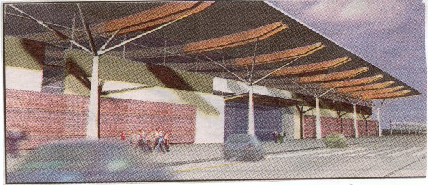
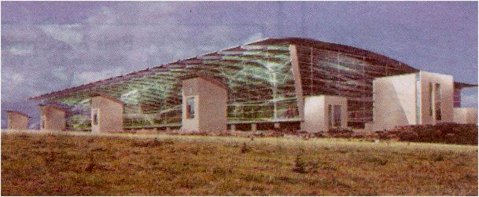
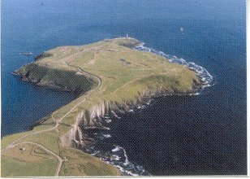

Aer Rianta |
Cork Airport |
|
SITE INDEX
|
|
|
Cork Airport Development Plan A total of 60 million pounds will be invested in the airport to include apron and terminal expansion, taxiways, airbridges, new cargo facilities, multi storey car parking and a new pier building. This development plan comes at a time when the airport is experiencing record growth levels in passenger and cargo business and will greatly enhance the facilities now in place in the existing terminal building and airfield site. The plan provides for the development of passenger facilities up to 5 million passengers per annum be continued expansion of the existing terminal building and site. The principal phases are as follows: Short Term Extension to existing terminal Construction of a new pier Provision of three airbridges on the new pier Multi Storey car park Long Term Further extension of passenger terminal and pier Additional airbridges |
 |
|  |  |